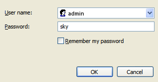
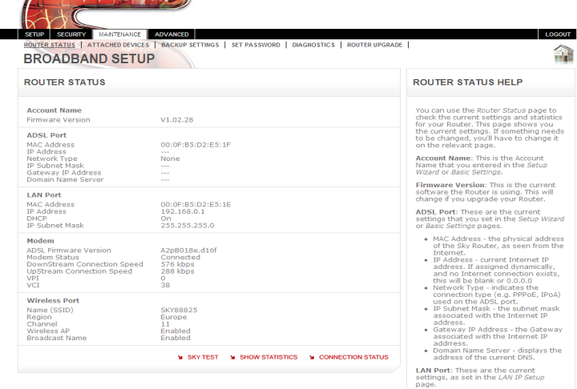
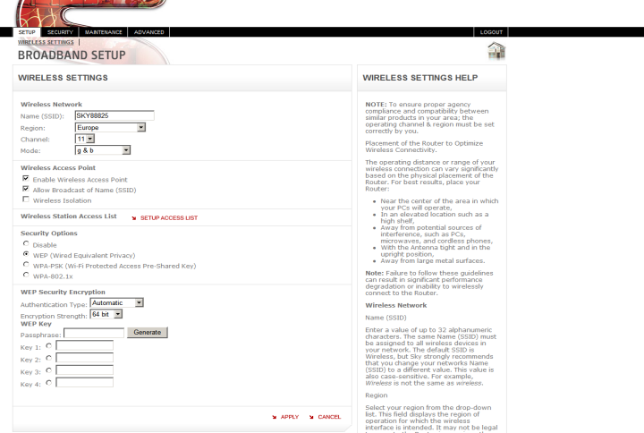
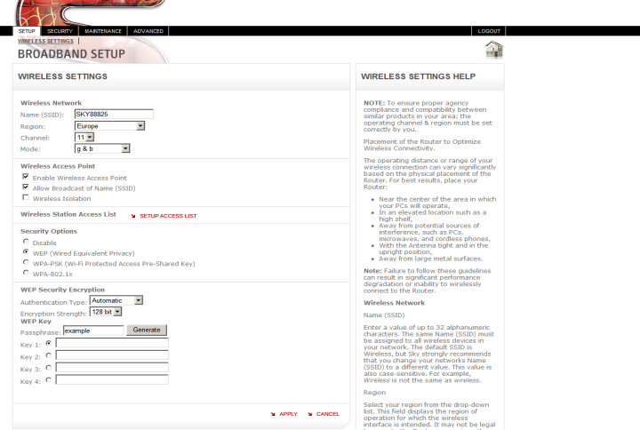

Step 4
By default the Sky wireless router is pre-configured with WPA encryption. If your computer is not compatible with WPA, but can support WEP encryption, follow the steps below to switch your Sky wireless router to WEP. Please note you will need to be connected to the Sky wireless router through the yellow Ethernet cable in order to access its Wireless Settings and change to WEP encryption.
Switching the Sky wireless router to WEP encryption
-
Open a web browser Open a web browser window (or double click on the ‘S’ icon on your desktop to open a new browser window). Enter 192.168.0.1 in the address bar, and hit ‘Return’.
-
A login box will pop up – enter Username = admin and Password = sky
 -
Click on the Wireless Settings link in the left hand navigation menu to bring up the Wireless Settings screen
 -
In the Security Options section, select the WEP (Wired Equivalent Privacy) option

-
The screen will change to include the WEP specific options as shown below:
 -
Authentication Type should be left at the Automatic setting.
-
In the encryption strength drop down menu, select 128 bit instead of the current 64 bit option.
-
Enter some random characters into the Passphrase box. This will be used to generate 4 encryption keys which are used to encrypt the data across the wireless network.
-
Press Generate to create the keys.
 -
The keys are displayed in the 4 boxes (in the example shown, all 4 keys are identical.)

-
Copy and paste the full key to a saved document on your computer (in this example, 5CD9894140A6FF7EB896AF6789), or write this down carefully, as you will need it later when setting up your computer, or your computer’s adapter, on the wireless network.
-
Click Apply – your Sky wireless router has now been switched to WEP encryption
Connecting your PC wirelessly to the Sky wireless router
-
From the Start Menu, select Control Panel and then select the Network and Internet Connections option.

-
In the Network and Internet Connections window, select Network Connections

-
In the Network Connections window, if a Wireless Network Connection is listed, double click this to open the Wireless Network Connection window
- If no Wireless Connection is listed in the Wireless Network Connection window that appears, go to the wireless connection management section

-
The Sky wireless router wireless network should appear in the list of available networks – you can find the name of your wireless network on the bottom of the Sky wireless router, as well as on the Wireless Network Settings card included with your Sky wireless router and Setup Guide. Your wireless network will be called ‘SKY’ + 5 numbers, for example: ‘SKY12345’
-
Double click the name of your wireless network to connect
-
As the connection is now configured with WEP encryption, a window will appear asking for confirmation of the WEP or network key before the PC will be able to connect.
-
The WEP or network key is the key you created when switching the Sky wireless router to WEP (in this example, 5CD9894140A6FF7EB896AF6789). Enter this into the first box, and then repeat in the second box to confirm it. Then click Connect
-
Your PC should connect and the connection will show as “Connected” in the Wireless Network Connection Window